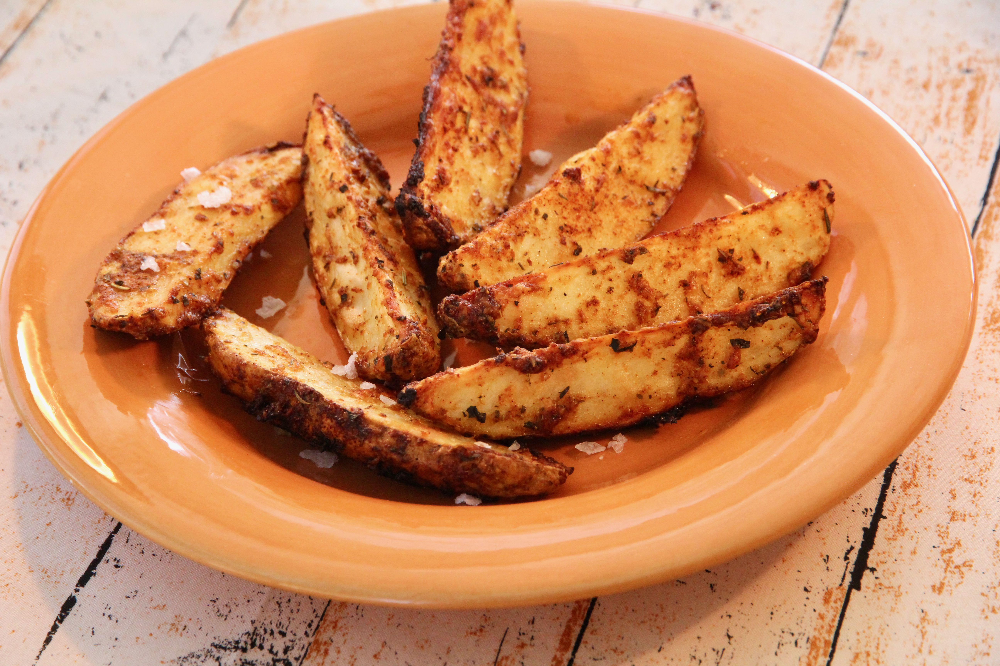

Garlic parmesan potato Wedges

These garlic parmesan potato wedges are a perfect side or snack.
Ingredients
- 3 large russet potatoes, scrubbed and cut into wedges
- 4 tablespoons olive oil
- ½ cup grated Parmesan cheese
- 2 teaspoons Italian seasoning
- 2 teaspoons garlic powder
- 1 teaspoon paprika
- salt to taste
Directions
- Preheat the oven to 400 degrees F (200 degrees C).
- Place potato wedges in a large bowl. Drizzle with
olive oil and toss to coat. Sprinkle potato wedges
with Parmesan cheese and toss again.
- Mix Italian seasoning, garlic powder, paprika, and
salt together in a small bowl. Sprinkle over the wedges
and toss to coat. Arrange wedges skin-side down on a rimmed baking sheet.
- Bake in the preheated oven until fork-tender and golden, about 40 minutes.
Nutrition Facts
Per Serving: 384 calories; protein 9.8g;
carbohydrates 50.6g; fat 16.8g; cholesterol 8.8mg; sodium 209.2mg.
Return Home